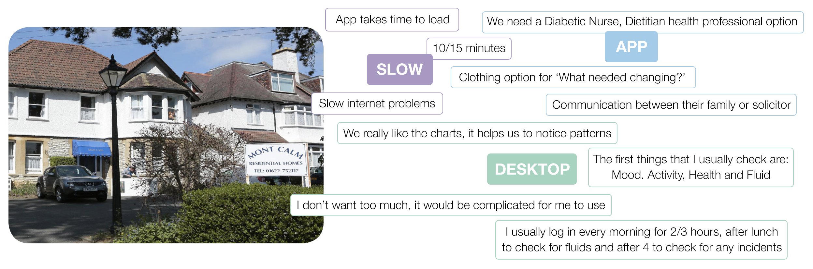
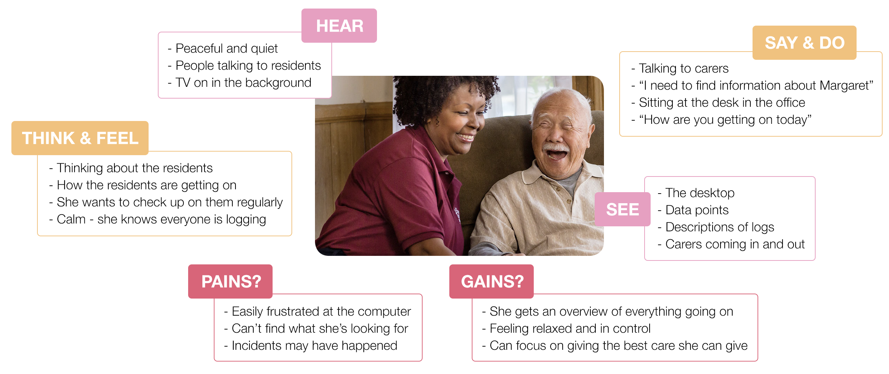

Log My Care
Log My Care is a free care planning software for care homes. A lot of care homes will still use tons of paper to record and keep data. Log My Care is an easy way to ditch paper care recording and improve the quality of care. They have a ‘Carer App’ for carers to log the care they give, see their To-Do list and have resident information at their fingertips. As well as their ‘Care Office’ used by managers to see health metrics for the residents, store residents’ documents and set To-Do lists.
My brief was to have a look at the Resident Charts inside the ‘Care Office’ which has the charts and the logs of the residents and see where to make improvements.
User Research
Because I wasn’t very familiar with how a care home operated, I first spoke to Log My Care about what is most important for a care home. I learnt that care homes main focus is on providing high quality care. They do this by meeting standards set out by the CQC (Care Quality Commission), this can be a make or break assessment for some care homes. They also provide high quality care by having an element trust with residents and families that means constant monitoring and logging that data is essential.
Next, I had the opportunity to visit one of the most active care homes that use Log My Care, Mont Calm. I wanted to learn about how they use the system as a whole, what they liked about the Resident Charts and what frustrations they were having with it. We focused on 3 main subjects during my visit which were, how slow the app was, some additional features they wanted in the app and an overall discussion on how they use the ‘Care Office’.
Empathy Map
After getting to know more about the people that use Log My Care, I made a persona to focus on. Susan, an experienced care home manager, likes to be on top of everything but she’s not very tech savvy so she needs everything to be easy to access and easy to understand. With an empathy map I was able to get a deeper understanding into what users like Susan would be thinking and feeling.
